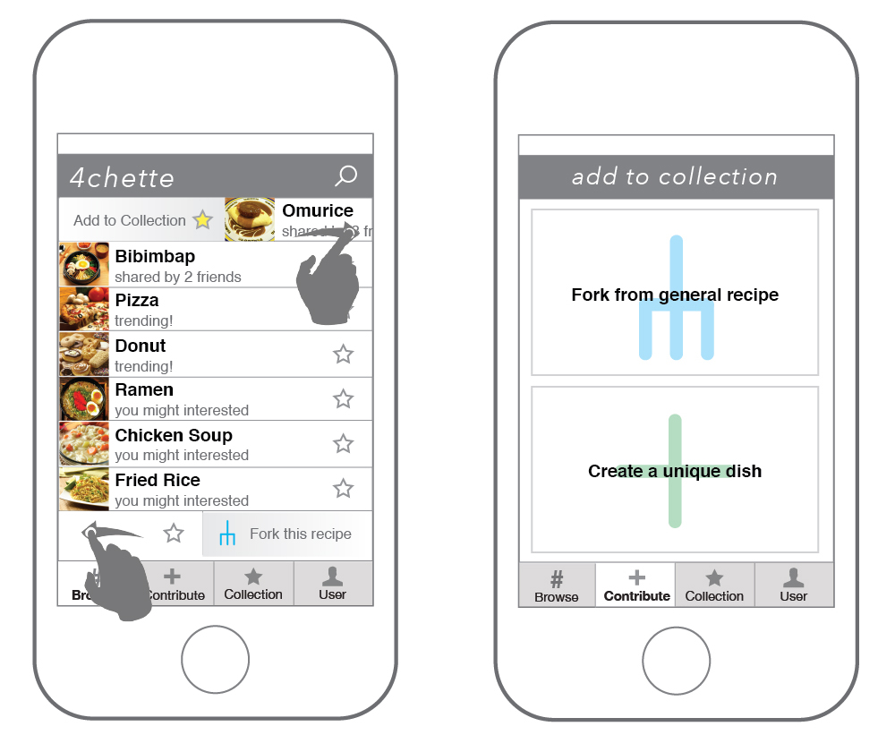
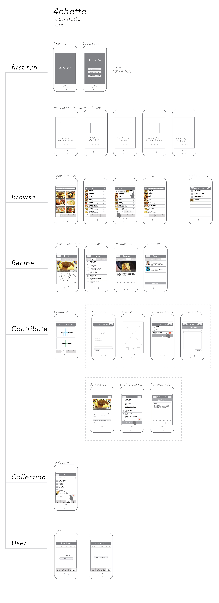
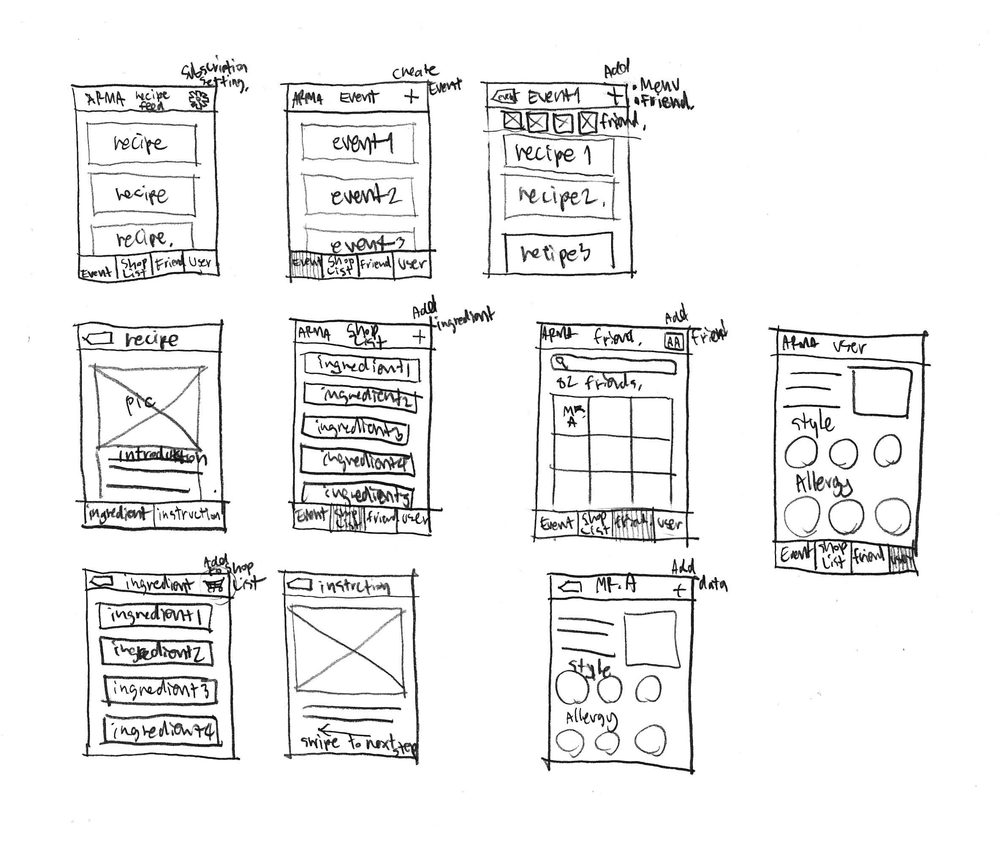
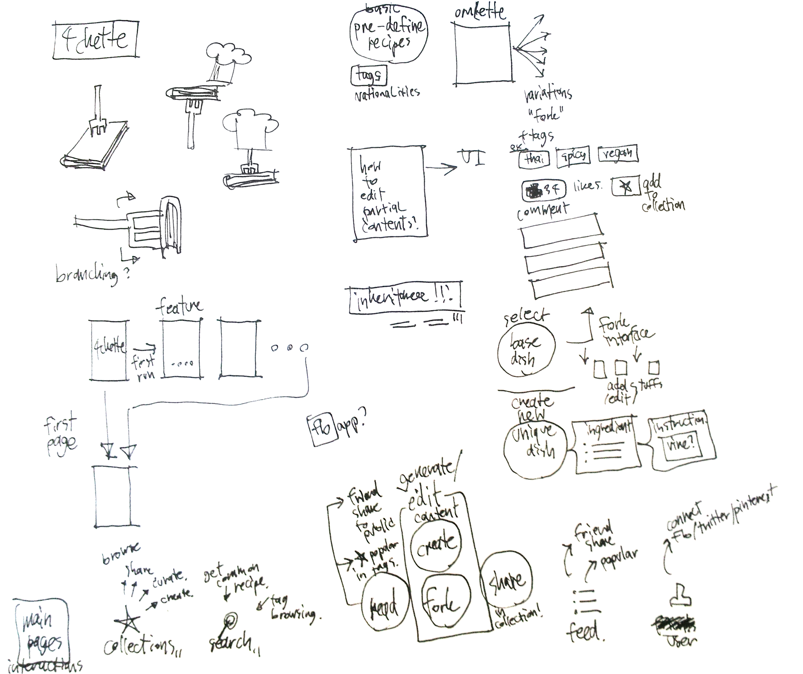

<div class="row">


	<div class="fr-work-text col-xs-12 col-md-4 col-md-push-8">
		<h3>{{page.title}}</h3>
		<h5>{{page.year}}</h5>
		<h6>{{page.tags}}</h6>
		{% if page.collab %}
		<h6> in collaboration with {{page.collab}}</h6>
		{% endif %}
		  
		<p>
			4chette (Fourchette, French for fork) is a concept design for opensource social networks on mobile device. It makes documenting and sharing food recipe much easier by snapping a photo and gestural controls. 
		</p>
		<p>
			Food in every single meal contains in cultural heritage that could be very interesting if you can track it down. There might be some ingredients that you simply never used or alternative ways to cook your every meals that you never realized. 4chette mash up your meal with other users. Contributing your iteration of the meal to 4chette and let the world taste your unique recipe.  
		</p>
	</div>


	<div class="fr-work-img col-xs-12 col-md-8 col-md-pull-4">  

		
		
		
		
		

	</div>


</div>
{% include worktile.html %}